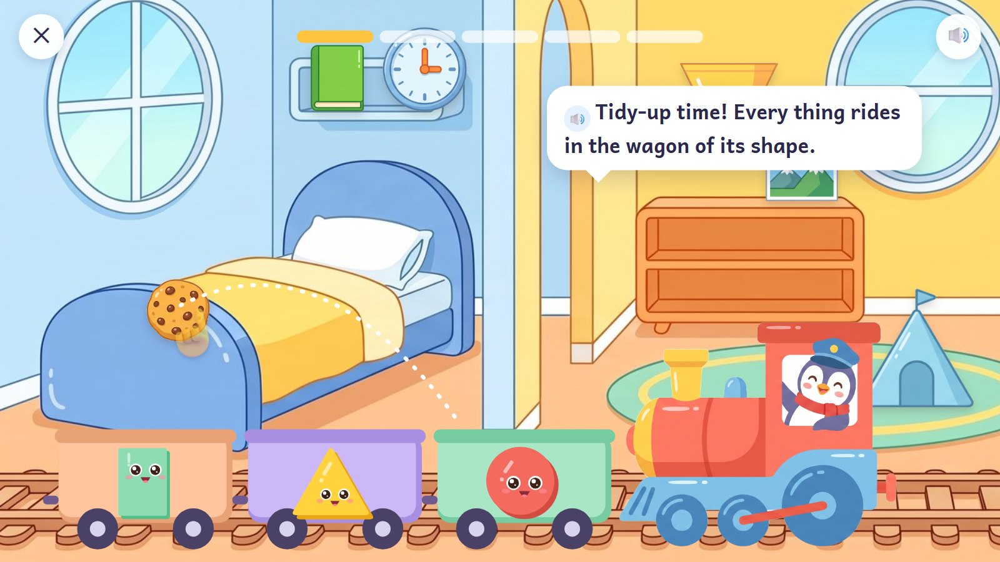
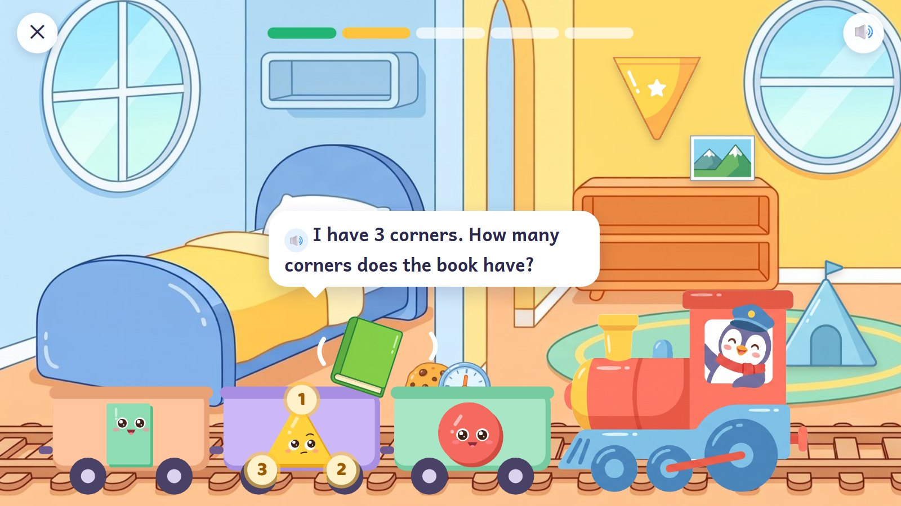
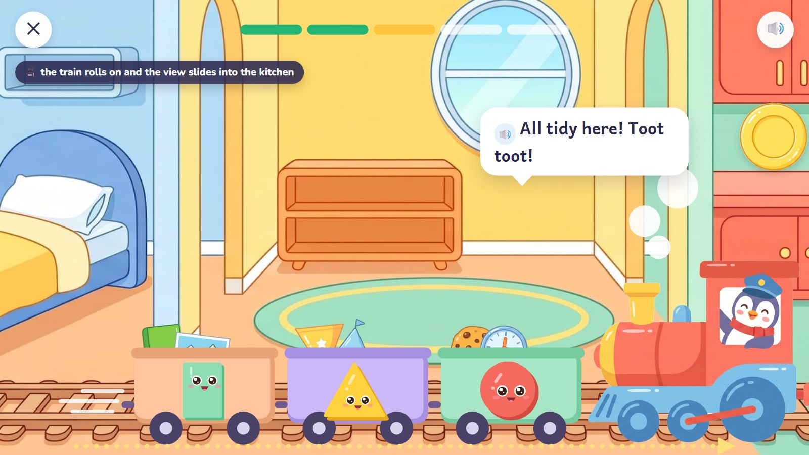
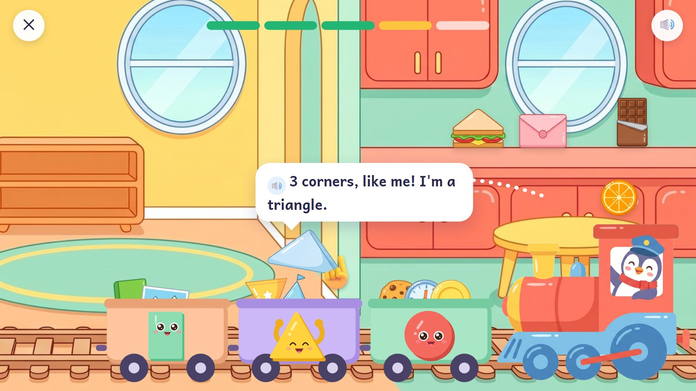
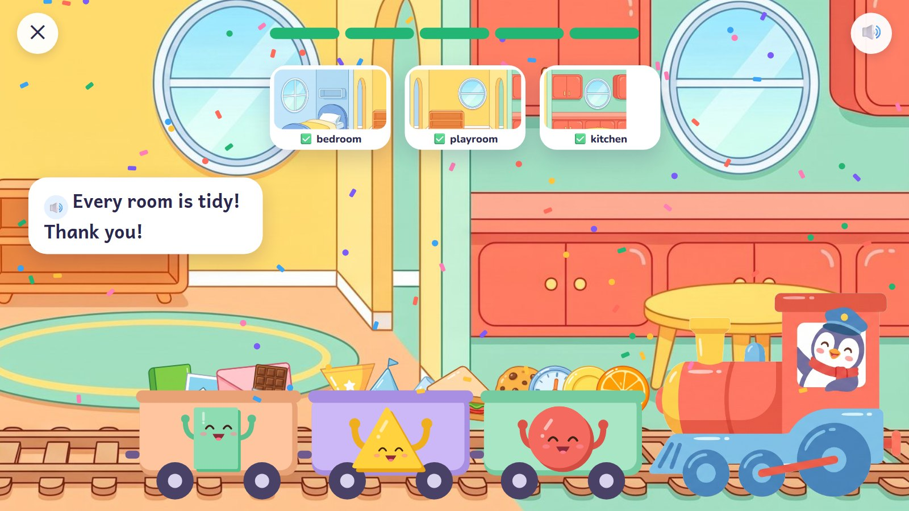

Tidy-Up Train
Things are lying around a home. A toy train driven by the penguin has three wagons, each with a living shape on its front: a circle, a triangle and a rectangle. Drag each thing into the wagon of its shape, and the shape's arms pop out to catch it. When a room is tidy the train toots and rolls on into the next room.
Pre-K–K · ages 4–6 E08 Sorting trays + E22 Shape inspection
Skill: Match the flat outline of real things to a circle, a triangle or a rectangle; sort by a rule. One activity is 5 rounds, about 90–150 seconds.
🎉 The fun
Things get caught by living shapes; the train toots and rolls on through the house.
🎥 The view
Sideways: bedroom → playroom → kitchen. The tidy rooms stay tidy behind the train.
🎆 The finale
Every room tidy, the full train, the shapes cheering with their arms up.
Six moments

1Tidy-up time
Things lie around the bedroom and playroom. The train waits with three empty wagons; each has a living shape on its front, arms and legs tucked away. A see-through hand shows one drag.
🔊 "Tidy-up time! Every thing rides in the wagon of its shape."
Behind the scenes: A round is three things, one for each wagon: two rounds in the bedroom, two in the playroom, one in the kitchen.

2Catch!
The child drags the clock to the circle's wagon. The circle's arms pop out to catch it (no legs: it is riding).
🔊 "Round, like me! I'm a circle."
Behind the scenes: Arms and legs come out only to move, and tuck away again afterwards.

3A wrong try
The book lands on the triangle's wagon and wobbles on the edge. The triangle counts its own corners.
🔊 "I have 3 corners. How many corners does the book have?"
Behind the scenes: The book stays there until the child moves it. The tip is about corners, not the answer.

4Toot toot!
The room is tidy. The train rolls on and the view slides along into the kitchen.
🔊 "All tidy here! Toot toot!"
Behind the scenes: The slide comes only after the round is done (under a second), and the next room already has its things.

5The kitchen
More things. A folded napkin flies into the triangle's wagon and the triangle catches it.
🔊 "3 corners, like me! I'm a triangle."
Behind the scenes: Only things whose flat outline really is the shape. A pizza slice (curved crust), a flag on a pole and a tablet with round corners are left out.

6All tidy
Every room is tidy (the three little pictures at the top), the train is full, and the shapes cheer with their arms up.
🔊 "Every room is tidy! Thank you!"
Behind the scenes: Two or three seconds of celebration, then Continue.
The frames are mock-ups: Gemini's drawings (backgrounds, friends, things) and shapes and numbers drawn by code, put together as the app would at run time. In the app everything moves; here it stands still.
How it changes
| What changes | Range |
|---|---|
| Sorting rule | by outline (circle, triangle, rectangle) → squares and other rectangles → colour and shape → "not a triangle" |
| Wagons | 2 → 3 → 4 |
| Rooms | bedroom, playroom, kitchen, garden shed, classroom |
| Things | drawn flat and front-on, so the outline is clear (a clock, a plate, a sandwich, a napkin, a book, a postcard…) |
| Planned activities | E08 60 + E22 80 planned cards |
From a model to a word problem
| Step | In this activity |
|---|---|
| 1. See it | Watch one thing being sorted: its outline is traced, then it goes to its wagon (a demonstration, not a real one). |
| 2. Fill one part | Two wagons already have their things; finish the third. |
| 3. On your own | A messy room and three wagons. |
| 4. Check it | "The penguin sorted these. Is everything in the right wagon?" Find the odd one and move it. |
| 5. Word problem | "We need a wagon for things with no corners. Which things go in?" |
Wrong answers we expect, and what happens
| Mistake | Looks like | What happens (never red, never "wrong") |
|---|---|---|
| Sorting by colour | the red book goes with the red circle | "Look at the edges, not the colour." |
| A turned triangle | a triangle on its point "isn't a triangle" | it turns slowly and still has 3 corners |
| Square or rectangle | (later levels) a square in the "not rectangles" wagon | "A square is a special rectangle." |
| The thing, not its outline | a ball for "circle" | only flat, front-on things are used |
What it needs
- The house: one wide picture of three rooms (drawn)
- The toy engine with the penguin driving (drawn); wagons drawn by code
- 15 flat things (18 drawn so far)
- Living shapes, drawn by code with arms and legs that tuck away
Test robot: Knows each thing's outline from its data and drags each one to the right wagon. Once a round it makes one mistake, to check the tip, and it checks the train only moves once a room is tidy.